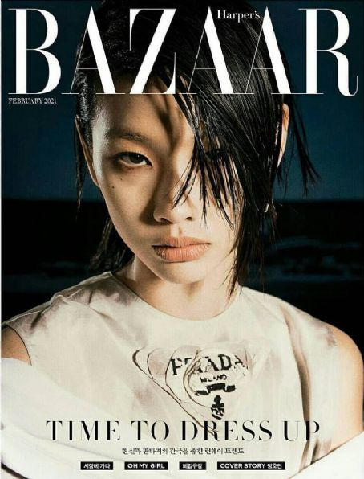

There is a preconceived notion that attractive women cannot be smart. Models are often excellent businesswomen and know very well how to manage a long and profitable career, becoming TV show presenters or video fitness instructors to help people keep fit, launching beauty lines or fragrances, or starting an acting career. And many of them get involved in charity programs. For a career that can very easily be short-lived, a good model is one that recognizes and accepts how ever-changing the industry is, and has the flexibility to adapt to it. Read below to learn about two of the most successful models in 2022.

Adut Akech Bior
Adut Akech Bior, born 25 December 1999, is a South Sudanese-Australian model. Akech made her fashion week runway debut as an exclusive in the Saint Laurent S/S 17 show and went on to close both their F/W 17 and S/S 18 shows as an exclusive. In 2018, she was chosen as "Model of the Year" by models.com, an honor which was repeated the next year.


Jung Ho-yeon
Jung Ho-yeon (born June 23, 1994), also known as HoYeon Jung, is a South Korean model and actress. She began her career as a freelance model in 2010, walking in Seoul Fashion Week shows for two years. In 2013, she competed on the fourth season of Korea's Next Top Model and placed as a runner-up. In 2016, Jung signed with The Society Management and left South Korea to pursue a career overseas. She became known for her "fiery" red hair after making her international runway debut during New York Fashion Week. She was a Louis Vuitton exclusive in 2016, and became a global ambassador for the brand in 2021.
